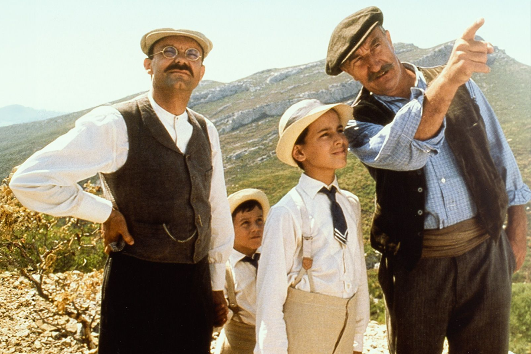

Frédéric Mistral - Mirèio
Épopée amoureuse en provençal
entre Arles et les Alpilles. Poésie, légende et culture paysanne. Prix
Nobel de littérature en 1904.
Jean Giono - Colline
Premier roman de Giono, qui mêle
nature, silence et mysticisme. Une Provence rude, presque sauvage
Jean Giono - Le Chant du monde
Fresque poétique sur
l'amour et la guerre dans les paysages reculés de Haute-Provence.
Peter Mayle - Une année en Provence
Chronique savoureuse
et drôle d'un Anglais installé dans le Luberon. Un classique de l'art
de vivre provençal.
Pierre Magnan - Le Sang des Atrides
Polar rustique et
littéraire au cœur de la garrigue, entre secrets de famille et
paysages brûlants.
Marcel Pagnol - La Gloire de mon père / Le Château de ma mère
Souvenirs d'enfance tournés dans les collines provençales,
entre bastides, cigales et humour tendre.
Daniel Auteuil - La Fille du puisatier (2011)
Remake du
film de Pagnol tourné dans les Alpilles. Entre guerre, traditions et
amour impossible.
Jean Reno - Avis de mistral (2014)
Comédie dramatique
familiale tournée autour de Maussane et des Baux. Paysages lumineux et
génération en crise.
Jean Cocteau - Le Testament d'Orphée (1960)
Film
surréaliste tourné au château des Baux-de-Provence et dans les
Carrières. Cocteau en poète, dans les ruines intemporelles.
Vincent Van Gogh - La Nuit étoilée (1889)
Peinte depuis la
fenêtre de l'asile de Saint-Rémy. L'œuvre la plus mythique de
l'artiste.
Vincent Van Gogh - Les Oliviers (1889)
Série de toiles
inspirées des oliveraies autour de Saint-Rémy. Vibrant et tourmenté.
Vincent Van Gogh - Le Champ de blé aux cyprès (1889)
Paysage typique de Provence, lignes tourbillonnantes et tension
dramatique.
Paul Cézanne - Montagne Sainte-Victoire vue des Lauves
(1904-1906)
Bien qu'inspiré d'Aix, il illustre l'obsession du peintre pour
la lumière et la géométrie du Sud.
Auguste Chabaud - Paysage des Alpilles (vers 1930)
Peintre
provençal, il traduit la sécheresse minérale et les couleurs du
massif.
René Seyssaud - Le Chemin de Saint-Rémy (début XXe)
Précurseur du fauvisme, il capte la Provence avec des couleurs
franches et vibrantes.